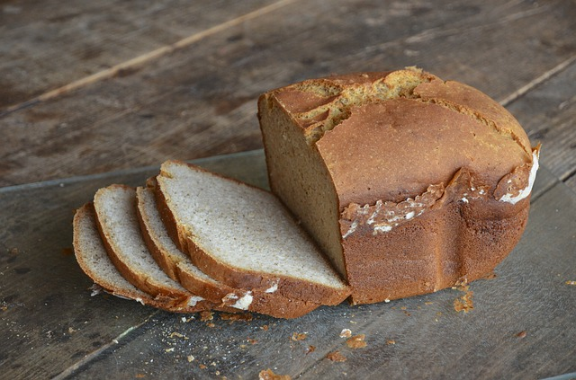

El gluten es un conjunto de proteínas de pequeño tamaño, contenidas exclusivamente en la harina de los cereales de secano, fundamentalmente el trigo, pero también la cebada y el centeno, así como cualquiera de sus variedades e híbridos (tales como la espelta, la escanda, el kamut, el triticale y el farro). La avena contiene proteínas capaces de provocar reacción en una parte de personas celíacas. A esto se suma que la avena frecuentemente está contaminada con otros cereales con gluten.
Desde la primera década del siglo XXI ha quedado claro que, junto con la enfermedad celíaca, existen otras enfermedades causadas por la ingestión de gluten. "Trastornos relacionados con el gluten" es el término actualmente aceptado para denominarlas. Se desaconseja utilizar el término "intolerancia al gluten", por su falta de precisión.
En los consensos de Londres (febrero de 2011) y Oslo (junio de 2011) se reconocen tres formas principales de los trastornos relacionados con el gluten:
| Alimento | Contiene gluten | No contine gluten |
|---|---|---|
| Trigo | X | |
| Avena | Suele estar contaminada con gluten | |
| Quinoa | X | |
| mezclada con harinas | ||
| Empanadillas | Alimentos procesados pueden contener gluten dependiendo de sus ingredientes | |
| Croquetas | ||